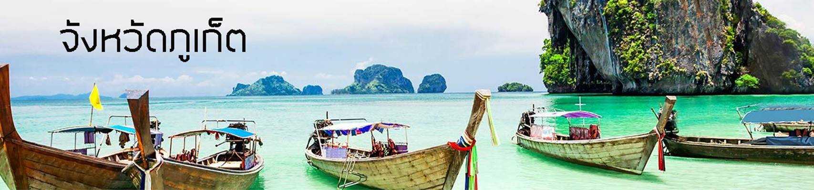

Phuket

เกี่ยวกับจังหวัดภูเก็ต
ภูเก็ต เป็นเกาะใหญ่ที่สุดของประเทศไทย ตั้งอยู่ห่าง จากกรุงเทพฯ 862 กม. เป็นเกาะเดียวที่มีฐานะเป็น จังหวัด คำว่าภูเก็ตมาจาก "ภูเก็จ" ซึ่งมีความหมายว่าภูเขา แก้ว ได้รับสมญานามว่า มุกงามของไทย เป็นเกาะที่มีชื่อ เสียงมาแต่โบราณ เคยเป็นดินแดนแห่งเศรษฐีเหมืองแร่ดีบุก มีแร่ดีบุกมากที่สุดในประเทศไทย ซึ่งการขุดแร่ดีบุกที่ภูเก็ต มีประวัติความเป็นมากว่า 500 ปีแล้ว นอกจากนี้ยังมีการ ปลูกยางพารา ทำสวนมะพร้าว สวนผลไม้ และทำการ ประมง ในตัวเมืองภูเก็ตยังสามารถพบตึกสมัยเก่าแบบยุโรปที่ยังคงได้รับการอนุรักษ์ไว้ ภูเก็ตเป็นเกาะที่สวยงาม มีชาย ทะเลและขุนเขาที่เหมาะแก่การท่องเที่ยวเป็นอย่างยิ่ง มีเกาะบริวารรายรอบถึง 39 เกาะ มีพื้นที่ 543 ตรกม. เล็ก ที่สุดในภาคใต้ มีอาณาเขตเขตติดต่อกับพังงาทางด้านทิศเหนือที่ช่องปากพระซึ่งกว้างประมาณ 490 เมตร มีสะพานสาร สินเชื่อมระหว่างท่าฉัตรชัยของภูเก็ตกับท่านุ่นของพังงายาว 660 เมตร
ประชากรของจังหวัดภูเก็ตส่วนใหญ่เป็นคนไทย นอกนั้นมีชาวมลายู แขก ซิกซ์ ปาทานกลิงค์กรูซ่า ชาวเล และชาวต่างชาติอื่นๆ ภาษาที่ใช้ในภูเก็ตมี 2 ภาษา คือ ภาษาไทย ซึ่งใช้ในราชการเป็นภาษากลาง และภาษาท้องถิ่น ซึ่งเป็นภาษาปักษ์ใต้ที่มีเอกลักษณ์เป็นของตนเอง อาชีพของพลเมืองในด้านการเกษตรส่วนใหญ่ทำสวนยางพารา สวนมะพร้าว สวนผลไม้
อาณาเขต
- ทิศเหนือ จดช่องปากพระ จังหวัดพังงา เชื่อมโดยสะพานสารสินและสะพานท้าวเทพกษัตรีย์
- ทิศใต้ จดทะเลอันดามัน มหาสมุทรอินเดีย
- ทิศตะวันออก จดทะเลเขตจังหวัดพังงา
- ทิศตะวันตก จดทะเลอันดามัน มหาสมุทรอินเดีย
ภูมิอากาศ
มีภูมิอากาศแบบฝนเมืองร้อนมีลมพัดผ่านตลอดเวลา อากาศอบอุ่นและชุ่มชื้นตลอดปี มี 2 ฤดู คือ ฤดูร้อนและฤดูฝน ฤดูฝนเริ่มเดือนพฤษภาคม - ปลายเดือนตุลาคม ฤดูร้อนเริ่มประมาณเดือนพฤศจิกายน - เดือนเมษายน อุณหภูมิโดยเฉลี่ยสูงสุดประมาณ 33 อาศาเซลเซียส ต่ำสุด 23 องศาเซลเซียส ช่วงที่อากาศดีที่สุด อยู่ในช่วงเดือนพฤศจิกายน - เมษายน ไม่มีฝน ท้องฟ้าแจ่มใส อุณหภูมิประมาณ 31 องศาเซลเซียส
ประวัติความเป็นมา
ภูเก็ต เป็นชื่อที่ใช้เรียกในปัจจุบัน เดิมนั้นเรียกว่า " ภูเก็จ " แปลว่า " เมืองแก้ว " ซึ่งตรงกับความหมายของชาว ทมิฬ ซึ่งเรียกเมืองนี้ว่า " มณีคราม " ตามหลักฐานที่ปรากฏเมื่อปีพ.ศ.? 1568 ภูเก็ตเป็นเมืองที่มีประวัติศาสตร์ นานานับพันปี ซึ่งเป็น ที่รู้จักของนักเดินเรือ ที่ใช้เส้นทางระหว่างจีน อินเดีย โดยผ่านแหลมมาลายู โดยมีหลักฐาน เก่าแก่ที่สุดที่แสดงในแผนที่ เดินเรือของชาวปโตเลมี โดยกล่าวถึงการเดินทางจากแหลมสุวรรณภูมิ ลงมาแหลมมาลายู ต้องผ่านแหลมจังซีลอน ซึ่งคือภูเก็ตในปัจจุบัน
ประวัติความเป็นมาของจังหวัดภูเก็ต
เที่ยวภูเก็ต
สวัสดีค่ะ
Back to top